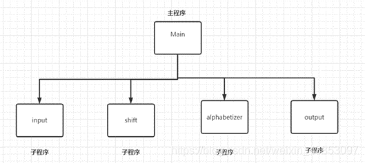

主程序-子程序软件体系结构

主程序-子程序软件体系结构是一种常见的软件设计架构
用于将复杂的软件系统分解为主程序和多个子程序（或称为模块、组件）来实现功能的划分和组织。这种体系结构有助于提高软件的可维护性、可扩展性和代码重用性。
主程序 - 子程序软件体系结构中，主程序掌控全局，调用各个子程序。 优点是模块化清晰，便于开发维护和提高可重用性。缺点是主程序故障可能导致系统崩溃，且扩展性较差。这种结构在小型或功能单一的软件中常见，大型复杂软件常需结合其他架构模式
主程序-子程序软件体系结构是一种常见的软件设计架构
用于将复杂的软件系统分解为主程序和多个子程序（或称为模块、组件）来实现功能的划分和组织。这种体系结构有助于提高软件的可维护性、可扩展性和代码重用性。
主程序 - 子程序软件体系结构中，主程序掌控全局，调用各个子程序。 优点是模块化清晰，便于开发维护和提高可重用性。缺点是主程序故障可能导致系统崩溃，且扩展性较差。这种结构在小型或功能单一的软件中常见，大型复杂软件常需结合其他架构模式